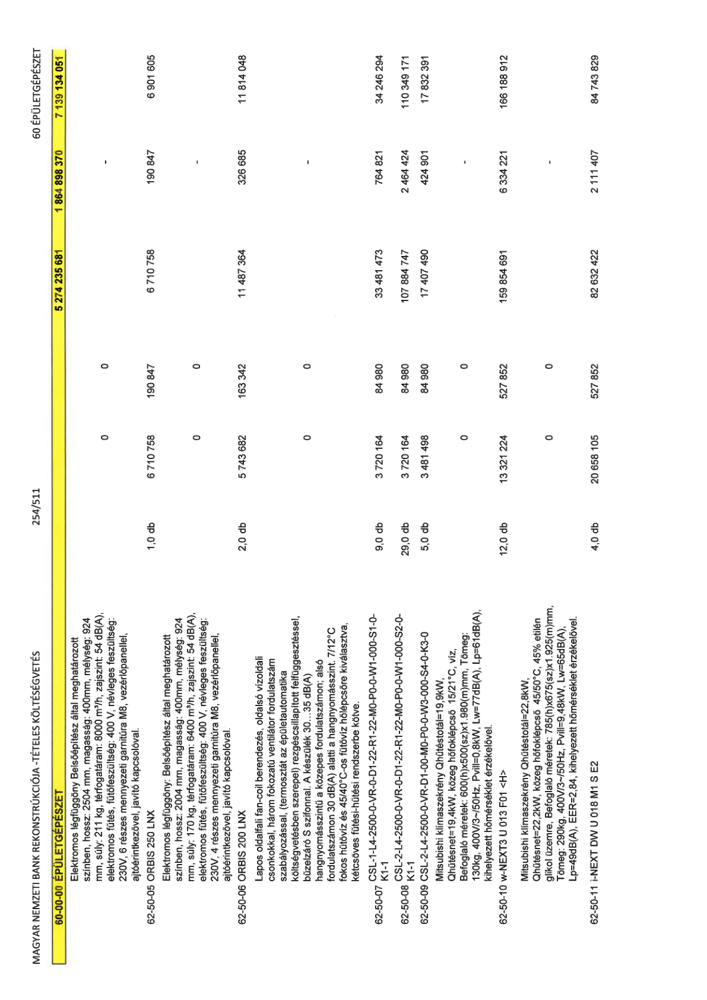

| Tétel | Menny. | Egys. | Anyag e.ár (net HUF) | Díj e.ár (net HUF) | Anyag összesen (net HUF) | Díj összesen (net HUF) | Anyag+Díj összesen (net HUF) |
|---|---|---|---|---|---|---|---|
| Elektromos légfüggöny Belsőépítész által meghatározott színben, hossz: 2504 mm, magasság: 400mm, mélység: 924 mm, súly: 211 kg, térfogatáram: 8000 m3/h, zajszint: 54 dB(A), elektromos fűtés, fűtőfeszültség: 400 V, névleges feszültség: 230V, 6 részes mennyezeti garnitúra M8, vezérlőpanellel, ajtóérintkezővel, javító kapcsolóval. | 0 | 0 | 0 | 0 | 0 | 0 | 0 |
| 62-50-05 ORBIS 250 LNX | 1,0 | db | 6 710 758 | 190 847 | 6 710 758 | 190 847 | 6 901 605 |
| Elektromos légfüggöny: Belsőépítész által meghatározott színben, hossz: 2004 mm, magasság: 400mm, mélység: 924 mm, súly: 170 kg, térfogatáram: 6400 m3/h, zajszint: 54 dB(A), elektromos fűtés, fűtőfeszültség: 400 V, névleges feszültség: 230V, 4 részes mennyezeti garnitúra M8, vezérlőpanellel, ajtóérintkezővel, javító kapcsolóval. | 0 | 0 | 0 | 0 | 0 | 0 | 0 |
| 62-50-06 ORBIS 200 LNX | 2,0 | db | 5 743 682 | 163 342 | 11 487 364 | 326 685 | 11 814 048 |
| Lapos oldalfali fan-coil berendezés, oldalsó vízoldali csonkokkal, három fokozatú ventilátor fordulatszám szabályozással, (termosztát az épületautomatika költségvetésben szerepel) rezgéscsillapított felfüggesztéssel, bűzelzáró S szifonnal. A készülék 30...35 dB(A) hangnyomásszintű a közepes fordulatszámon; alsó fordulatszámon 30 dB(A) alatti a hangnyomásszint. 7/12°C fokos hűtővíz és 45/40°C-os fűtővíz hőlépcsőre kiválasztva, kétcsöves fűtési-hűtési rendszerbe kötve. | 0 | 0 | 0 | 0 | 0 | 0 | 0 |
| 62-50-07 CSL-1-L4-2500-0-VR-0-D1-22-R1-22-M0-P0-0-W1-000-S1-0-K1-1 | 9,0 | db | 3 720 164 | 84 980 | 33 481 473 | 764 821 | 34 246 294 |
| 62-50-08 CSL-2-L4-2500-0-VR-0-D1-22-R1-22-M0-P0-0-W1-000-S2-0-K1-1 | 29,0 | db | 3 720 164 | 84 980 | 107 884 747 | 2 464 424 | 110 349 171 |
| 62-50-09 CSL-2-L4-2500-0-VR-D1-00-M0-P0-0-W3-000-S4-0-K3-0 | 5,0 | db | 3 481 498 | 84 980 | 17 407 490 | 424 901 | 17 832 391 |
| Mitsubishi klímaszekrény Qhűtéstotál=19,9kW, Qhűtésnet=19,4kW, közeg hőfoklépcső 15/21°C, víz. Befoglaló méretek: 600(h)x500(sz)x1.980(m)mm, Tömeg: 130kg, 400V/3~/50Hz, Pvill=0,8kW, Lw=77dB(A), Lp=61dB(A), kihelyezett hőmérséklet érzékelővel. | 0 | 0 | 0 | 0 | 0 | 0 | 0 |
| 62-50-10 w-NEXT3 U 013 F01 <H> | 12,0 | db | 13 321 224 | 527 852 | 159 854 691 | 6 334 221 | 166 188 912 |
| Mitsubishi klímaszekrény Qhűtéstotál=22,8kW, Qhűtésnet=22,2kW, közeg hőfoklépcső 45/50°C, 45% etilén glikol üzemre, Befoglaló méretek: 785(h)x675(sz)x1.925(m)mm, Tömeg: 290kg, 400V/3~/50Hz, Pvill=9,48kW, Lw=65dB(A), Lp=49dB(A), EER=2,84, kihelyezett hőmérséklet érzékelővel. | 0 | 0 | 0 | 0 | 0 | 0 | 0 |
| 62-50-11 i-NEXT DW U 018 M1 S E2 | 4,0 | db | 20 658 105 | 527 852 | 82 632 422 | 2 111 407 | 84 743 829 |
